Il gioco utilizza traiettorie dei proiettili definite tramite punti di controllo e Curve di Beziér
Una CURVA è una funzione P:(A,B)-> R3. La funzione p(t) è quindi una funzione vettoriale con le componenti di R3 (x,y,z). Una rappresentazione di una curva si dice PARAMETRICA quando la curva può essere rappresentata tramite una variabile t, il parametro. Comune è una rappresentazione in cui la forma parametrica è costituita da vari tratti di curve che si raccordano agli estremi.
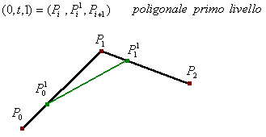Nel progetto sviluppato le curve sono utilizzate per definire il moto del proiettile tramite una traiettoria visibile. Tramite curve parametriche di terzo ordine possiamo rappresentare questo tipo di movimenti che risultano i più richiesti dalla maggior parte dei videogiochi.
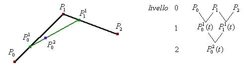Una curva di Beziér è una curva parametrica definita da un numero finito di punti P0,P1...Pk. Essa è costituita nello spazio attraverso l'interpolazione, in modo tale che segua l'andamento del poligono di controllo individuato dai suoi punti.
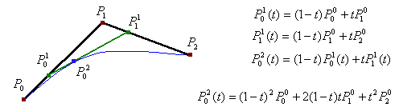Un algoritmo molto utilizzato poiché semplice ed efficiente è quello di De Casteljau: esso costruisce una curva attraverso ripetute interpolazioni lineari.
- L'algoritmo fissa inizialmente un valore al parametro t ∈ (0,1).
- Ogni coppia di punti di controllo consecutivi viene interpolata linearmente in funzione di t, ottenendo un nuovo punto.
- Fissati i punti di controllo {P0, P1,..Pk}, il parametro k determina il grado della curva (k+1 per generare una curva di grado k)
- Il poligono di controllo di cui avevamo parlato (Poligonale) è formato dai segmenti Ri = Pi-1, Pi con i = 0,1,...k.
- Ottenuta la Poligonale l'algoritmo ne forma una nuova, di primo livello, formata da k punti; Partendo da questa se ne forma una nuova di secondo livello con k-1 punti; si procede così fino alla definizione del punto cui corrisponde il valore del parametro t.
Curve di Beziér lineari: dati due punti P0 e P1, una curva di Beziér lineare è il segmento aventi come estremi i punti dati. (t può essere pensato come il tragitto da P0 a P1)
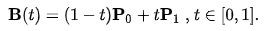Curve di Beziér quadratiche: dati tre punti P0, P1, P2 una curva di Beziér quadratica è l'interpolazione lineare tra i punti corrispondenti appartenenti alle curve tra P0 e P1 e tra P1 e P2. Queste sono le curve che sono state utilizzate ai fini del progetto. Curve cubiche possono essere ottenute tramite l'interpolazione di curve quadratiche.
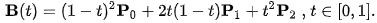- Algoritmo dei polinomi di Bernstein - Approccio utilizzato per generare curve che offre una rappresentazione compatta dell'equazione precedentemente descritta senza ricorrere ad algoritmi ricorsivi. Se i punti di controllo sono molti può risultare più efficiente questo approccio. Bn,k(t) sono i polinomi di Bernstein. Non è altro che una combinazione lineare dei punti mediante opportuni polinomi. La sommatoria deve essere uguale ad 1.
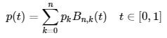Alcune proprietà che bisogna rispettare in questo algoritmo:
- La curva passa in p0 e p1 (punto iniziale e finale)
- La curva è posizionata nella regione convessa delimitata dai punti
- La curva è tangente nei punti estremi a P(1)-P(0) e P(n)-P(n-1)
Questi punti sono i punti di controllo e formano il poligono di controllo. Soltanto l'iniziale e finale appartengono alla curva, gli altri contribuiscono a modellare la curva ma non fanno parte di essa. Se modifichiamo tuttavia un punto di controllo, tutta la curva viene modificata, non solo la parte vicina al punto.
Nel progetto si è scelto di utilizzare l'algoritmo di De Casteljau per semplicità: dato che il giocatore non definisce direttamente i punti di controllo, si è però pensato un modo di automatizzare il sistema di sparo tramite la definizione di punti di controllo automatici. Ogni proiettile possiede infatti un path che corrisponde alla serie di punti che formeranno la curva.
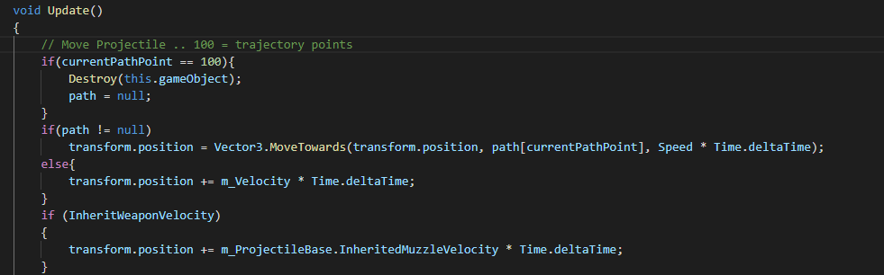Ogni proiettile si muove in base al path definito. Si è scelto di utilizzare una serie di 100 punti per ogni curva.
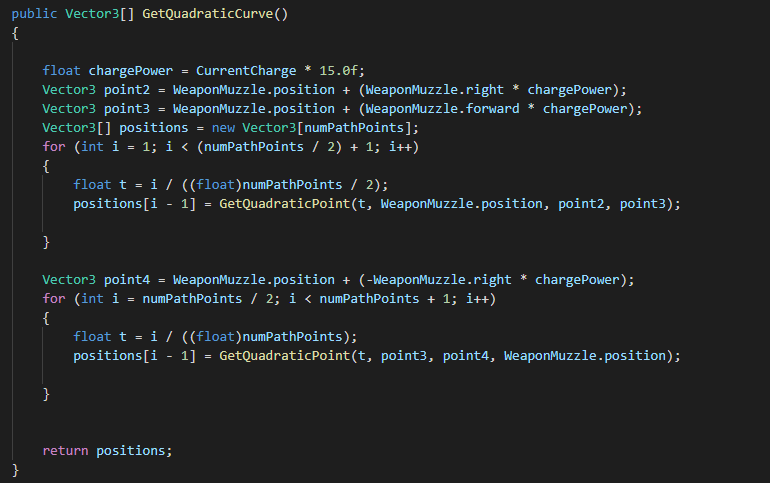I punti di controllo sono individuati a seconda della CARICA dell'arma: più si terrà premuto il pulsante di sparo più i punti di controllo saranno distanti e la curva risultante ampia.
Il primo punto di controllo corrisponde alla bocca di fuoco dell'arma del giocatore.
Il secondo punto di controllo è posizionato sul vettore destro rispetto all'arma del giocatore. La distanza dipenderà dalla carica attuale dell'arma.
Il terzo punto di controllo è posizionato sul vettore davanti l'arma del giocatore: anche qui la distanza dipenderà dalla carica dell'arma.
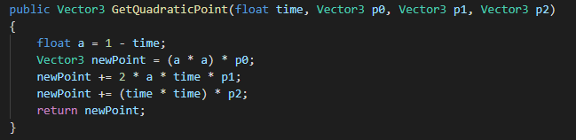Ogni proiettile seguirà la curva definita da questi punti di controllo, per poi tornare indietro calcolando la CURVA INVERSA rispetto alla partenza. Questa curva inversa è calcolata definendo un quarto punto di controllo che corrisponderà al vettore SINISTRO rispetto alla bocca di fuoco dell'arma.
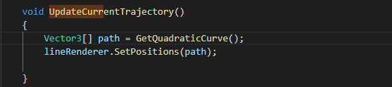L'intera traiettoria del proiettile sarà suggerita visivamente tramite una linea bianca o rossa (in presenza di nemici).
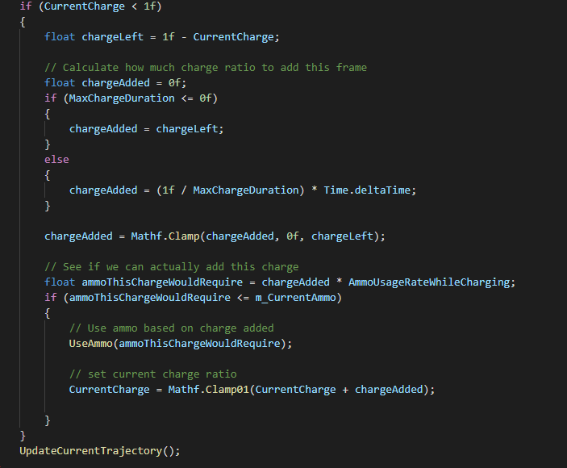Copyright © Davide Bagnato | davidebagnato97@gmail.com | Geometria Computazionale 2020/21